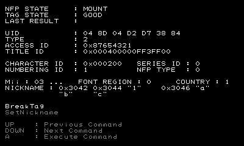

NfpUtil is a tool that helps you check whether your application complies with the NFP guidelines.
Prepare the NFP tags in advance, using the NoftWriter tool to write to the tags the amiibo data you plan to use in your application.
This section explains how to check whether your application is using the access ID assigned by Nintendo.
Prepare an NFP tag with an application-specific region for the application you are developing, and place it on the lower screen of a New Nintendo 3DS system.
If there are no problems with this NFP tag, the upper screen displays information about the tag, as shown in the figure below.

Confirm that the eight-digit hexadecimal value shown to the right of ACCESS ID matches the access ID issued by Nintendo.
You can use NfpUtil to intentionally corrupt the data region of an NFP tag.
First prepare an NFP tag to use for the guideline check and place it on the lower screen of a New Nintendo 3DS system.
Next use the up/down buttons on the +Control Pad to highlight BreakTag and then press the A button.
ResultSuccess appears to the right of LAST RESULT on the upper screen if this successfully corrupts the data region of the NFP tag.
If you attempt to mount this NFP tag on a system that does not have backup data for the tag, the error ResultNeedFormat is generated. If backup data is available on the system, the error ResultNeedRestore is generated.
Check whether the application you are developing conforms to the NFP standard as described in the 3DS Guidelines.
Use NfpUtil to write an illegal nickname to an NFP tag to check whether the application follows the NFP section in the 3DS Guidelines in the way it handles nicknames that contain unsupported characters.
First prepare an NFP tag to use for the guideline check and place it on the lower screen of a New Nintendo 3DS system.
If the data written to the NFP tag is corrupt, restore or format the NFP tag before proceeding.
Next use the up/down buttons on the +Control Pad to highlight SetNickname, and then press the A button.
LAST RESULT shows ResultSuccess if writing the nickname succeeds.
Mount this NFP tag using the application you are developing and confirm that the application works according to the NFP section in the 3DS Guidelines.
CONFIDENTIAL